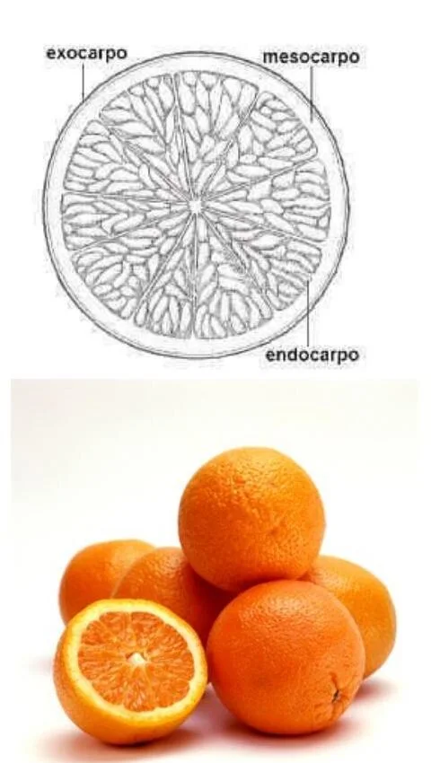

Módulo 06 · 30 minutos
Flor, fruto y semilla: dónde se concentra la esencia
Al terminar, vas a poder seguir el recorrido desde la flor hasta la semilla y reconocer qué estructura se observa o se aprovecha en cada etapa.
Una naranja abierta cambia la pregunta
Al cortar una naranja aparecen gajos, semillas y una cáscara formada por capas. Todo pertenece al mismo fruto, pero no todo cumple la misma función. Y cuando pensamos en su aroma, la parte decisiva no es el jugo: es la zona externa de la cáscara.
La anatomía deja entonces de ser una lista de nombres. Saber dónde estamos mirando permite comprender qué estructura protege, cuál contiene reservas y de qué parte puede obtenerse una esencia.
La flor: el comienzo de una nueva generación
La flor reúne hojas modificadas dispuestas en ciclos. El forma el ciclo exterior y suele ser verde. Hacia adentro aparece la , con pétalos que pueden atraer por su color, forma y aroma.
Los estambres forman el . Cada estambre posee un filamento y una antera, donde se produce el polen. En el centro se encuentra el . El estigma recibe el polen, el estilo lo conecta con el ovario y dentro del ovario se alojan los óvulos.
No todas las flores se presentan aisladas. Muchas se agrupan en . Reconocer si observamos una flor o un conjunto de flores evita errores al describir una planta.
Del ovario al fruto
Después de la fecundación, el ovario se desarrolla y forma el fruto. Su pared se convierte en . Puede distinguirse en tres capas:
- el exocarpio, capa exterior;
- el mesocarpio, zona intermedia;
- el endocarpio, capa interna que rodea las semillas.
La proporción y la textura de estas capas cambian según el tipo de fruto. Esa variación explica por qué una misma palabra —fruto— puede nombrar estructuras tan diferentes.

Leé la cáscara de afuera hacia adentro
Observá el corte del cítrico. Ubicá primero la superficie coloreada y después la zona blanca. ¿En cuál esperarías encontrar las pequeñas cavidades que liberan aroma cuando la cáscara se presiona o se raspa? Relacioná la respuesta con la parte que se utiliza para obtener la esencia cítrica.
El caso del hesperidio
Los cítricos producen un fruto llamado . La zona externa, coloreada, contiene glándulas con aceites esenciales. Debajo se encuentra una capa blanca y esponjosa. Hacia el interior aparecen los gajos, formados por pelos jugosos.
Esta lectura resuelve una confusión frecuente: aunque el fruto entero sea aromático al abrirse, la esencia se concentra en una estructura precisa de la cáscara. Identificar la especie sin identificar la parte utilizada deja incompleta la información.
La semilla: una planta en pausa
Dentro del fruto, la semilla protege tres componentes esenciales. El reúne las estructuras que darán origen a la nueva planta. El tejido de reserva aporta energía durante el comienzo del crecimiento. La envuelve el conjunto.
En las angiospermas, las semillas se forman dentro de un fruto. En las gimnospermas no están encerradas en un ovario; quedan asociadas a las escamas de estructuras como los conos. Esta diferencia permite separar dos grandes recorridos reproductivos.
También podemos observar la cantidad de cotiledones. Las monocotiledóneas poseen uno; las dicotiledóneas, dos. Los participan en el inicio del desarrollo, aunque no siempre emergen de la misma manera.
Cuando la semilla despierta
Una semilla viable puede permanecer en reposo hasta encontrar condiciones adecuadas. Para germinar necesita agua, oxígeno y una temperatura apropiada; algunas especies también responden a la luz.
El agua entra por difusión y provoca la imbibición: la semilla se hincha, se ablanda la cubierta y se activan procesos internos. Primero emerge la radícula, que inicia la raíz. Luego continúa el crecimiento del eje y aparecen las primeras estructuras aéreas.
En la , los cotiledones salen a la superficie. En la , quedan protegidos debajo mientras el brote asciende.
Actividad · Seguir una transformación
Elegí un fruto que tengas cerca y describilo sin usar todavía su nombre:
- ¿cómo es su capa exterior?;
- ¿qué parte intermedia reconocés?;
- ¿dónde están las semillas?;
- ¿qué estructura protegería al embrión?;
- si es un cítrico, ¿dónde localizarías la zona con aceite esencial?
Terminá con una frase: «Para aprovechar esta planta necesito identificar no solo la especie, sino también…».
La estructura correcta todavía necesita un nombre
Ya podemos distinguir hoja de folíolo, rizoma de raíz y cáscara aromática de pulpa. Pero dos plantas parecidas pueden recibir el mismo nombre cotidiano. En el próximo módulo vamos a construir una forma de nombrarlas que permita volver a encontrarlas sin depender de apodos locales.
Guardá esta estación
Cuando puedas explicar la idea central con tus propias palabras, marcá el módulo como completado.